01
Main menu
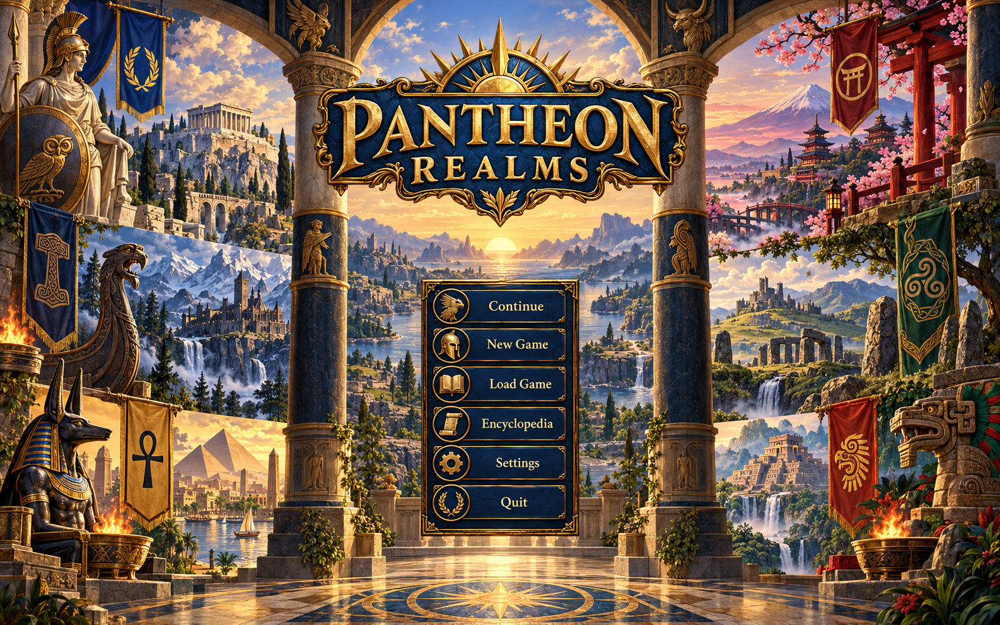
Keep Continue compatibility and storage checks; Quit remains desktop only. Existing menu background rotation can remain, or use the new hall. Read release version from package data; move detailed rules/content/storage information to Settings > Saves.
Implementation note: Use the existing logo and menu icons. Quit is desktop-only. All six cultures appear in the reference; the production hall is quieter behind live controls.
Current screens and asset mapping
New art: frontend.backdrop.title-hall
Shared art: gui.surface.parchment, gui.surface.stone, gui.control.button
02
Choose a journey
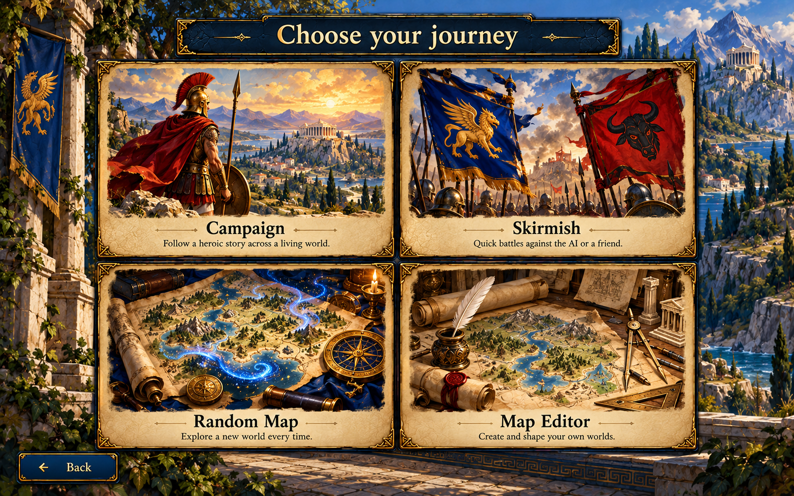
Use the existing four routes. Do not add online play, accounts, downloads or unsupported modes. Mode cards are real buttons with descriptions and keyboard focus.
Implementation note: Four real modes, with illustrated placeholder descriptions. Use catalog-driven campaign copy. Local hotseat is supported; do not infer network multiplayer from 'a friend'.
Current screens and asset mapping
New art: frontend.backdrop.title-hall, frontend.mode.campaign, frontend.mode.skirmish, frontend.mode.random-map, frontend.mode.map-editor
Shared art: gui.surface.parchment, gui.surface.stone, gui.control.button
03
Campaign chronicles
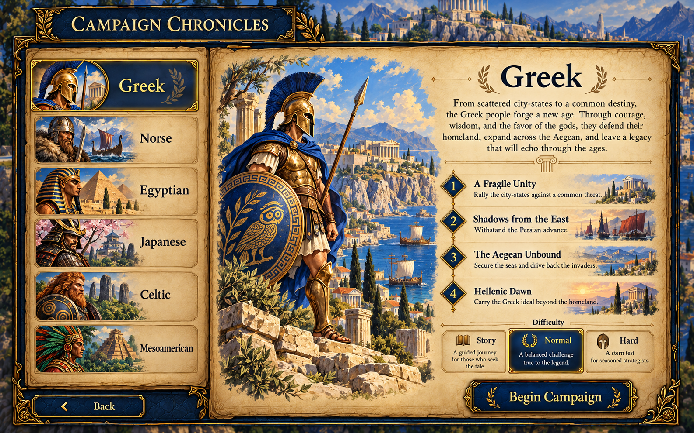
Bind all covers, names, descriptions, missionIds and difficulty effects to catalog. Mission list previews sequence only. Begin calls existing startCampaign with first mission and existing default patron; no replay selection, progress locks, or new patron step.
Implementation note: Generated chapter names and the shown four-mission sequence are placeholders, not actual campaign lore/count. Use the selected campaign's missionIds and existing cover. The outline is read-only; no replay or selectable mission nodes.
Current screens and asset mapping
New art: frontend.backdrop.atlas
Shared art: gui.surface.parchment, gui.surface.stone, gui.control.button, gui.book.open
04
Skirmish atlas
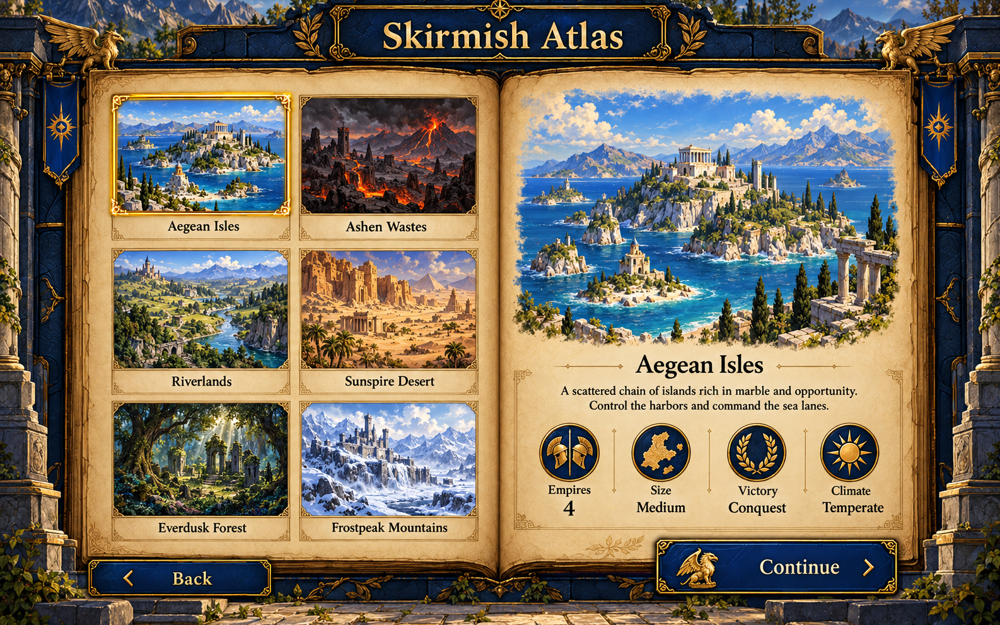
Preserve authored map and legacy scenario paths. Authored map details use existing Brief 14 painting, actual player count/cells/victory/biome/wealth/reveal facts. Legacy unavailable scenarios retain disabled explanations.
Implementation note: Illustrated map names, sizes and victory text are placeholders. Use actual authored-map paintings and catalog facts; do not create these sample maps or introduce new victory conditions.
Current screens and asset mapping
New art: frontend.backdrop.atlas
Shared art: gui.surface.parchment, gui.surface.stone, gui.control.button, gui.book.open
05
Random map atlas
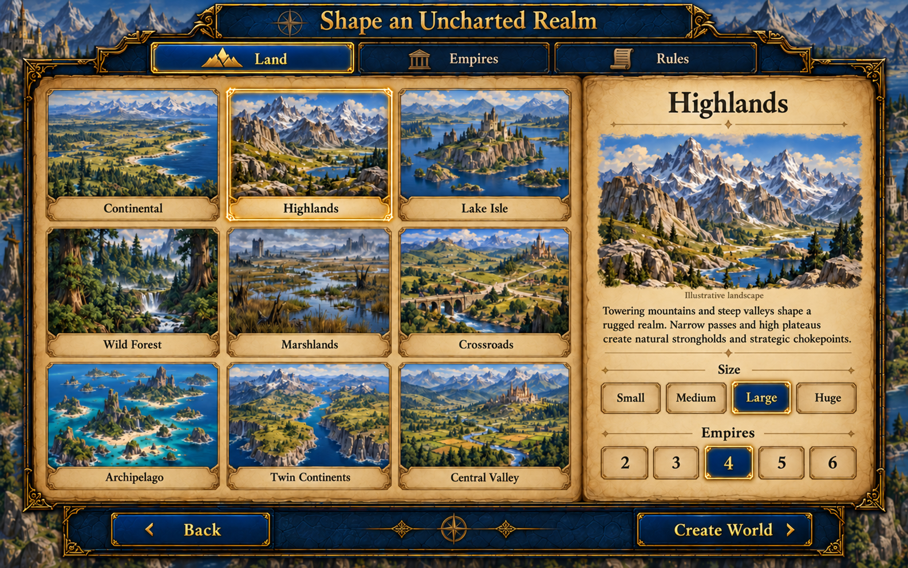
Preserve one RandomSetup state across proposed Land/Empires/Rules chapters. Use SKIRMISH_MAP_TYPES IDs and summaries. Cards illustrate archetypes, never the generated result. Twin Continents only two empires; four or more need large/huge. No seed field; existing Create generates fresh seed/retries/validation.
Implementation note: Use the nine separate production thumbnails, exact mapgen IDs and actual summaries. Landscape illustrations are not precise generated-map previews. The interactive reference demonstrates valid size/count states and preserved chapter selections.
Current screens and asset mapping
New art: frontend.backdrop.atlas, frontend.random.continental, frontend.random.highlands, frontend.random.lake_isle, frontend.random.wild_forest, frontend.random.marshlands, frontend.random.crossroads, frontend.random.archipelago, frontend.random.twin_continents, frontend.random.central_valley
Shared art: gui.surface.parchment, gui.surface.stone, gui.control.button, gui.book.open
06
Pantheons and empires
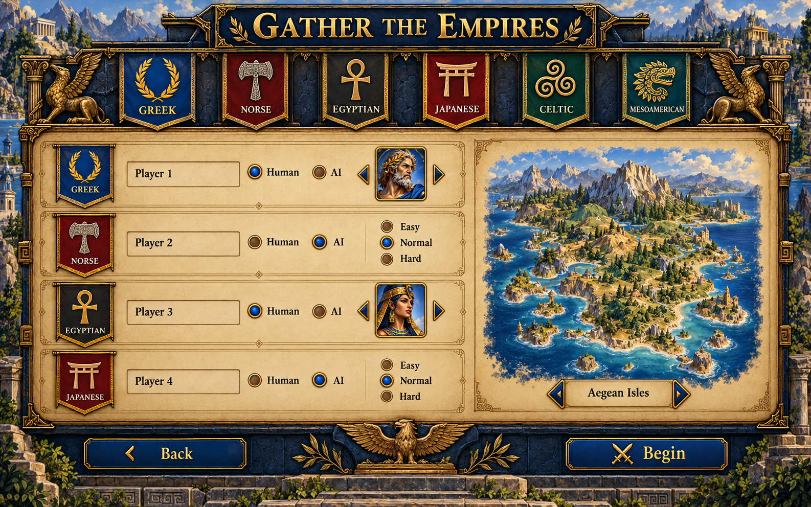
For legacy scenario pantheon selection keep existing starting-patron behavior. For authored/random matches use actual seat count, human/AI controller, human names and valid gods. Require at least one human; preserve unowned-town and AI-difficulty conditions. Authored/random go directly to adventure.
Implementation note: The painting illustrates four seats, not a fixed requirement. Current AI difficulty is one match-wide setting, not separate per-AI difficulty as the illustration suggests. Use real allowed patron portraits, actual map title and map-defined seat count. Map switching stays on the preceding selection screen.
Current screens and asset mapping
New art: frontend.backdrop.atlas
Shared art: gui.surface.parchment, gui.surface.stone, gui.control.button, gui.banner.greek, gui.banner.norse, gui.banner.egyptian, gui.banner.japanese, gui.banner.celtic, gui.banner.mesoamerican
07
Encyclopedia index
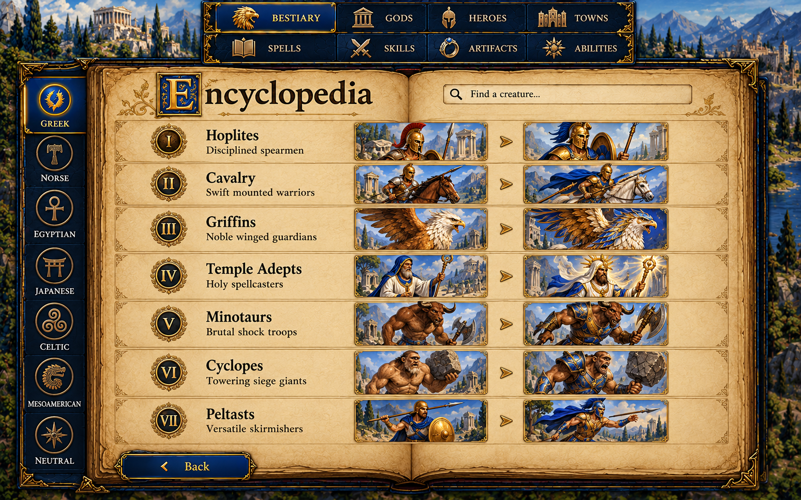
Preserve all eight categories and neutral creatures. Search/filter is a proposed local catalog presentation enhancement; reset/clamp selection on filtering. Render seven families per faction from data, both forms. Other categories use their actual data, not a forced seven-row creature layout.
Implementation note: Eight categories and six factions plus Neutral are represented. Creature names/order/tier numerals and forms are illustrative; bind actual catalog families and upgrades. Keep Peltast and every other family at its real tier. Other categories have distinct data layouts.
Current screens and asset mapping
New art: frontend.backdrop.library
Shared art: gui.surface.parchment, gui.surface.stone, gui.control.button, gui.book.open
08
Animated bestiary detail
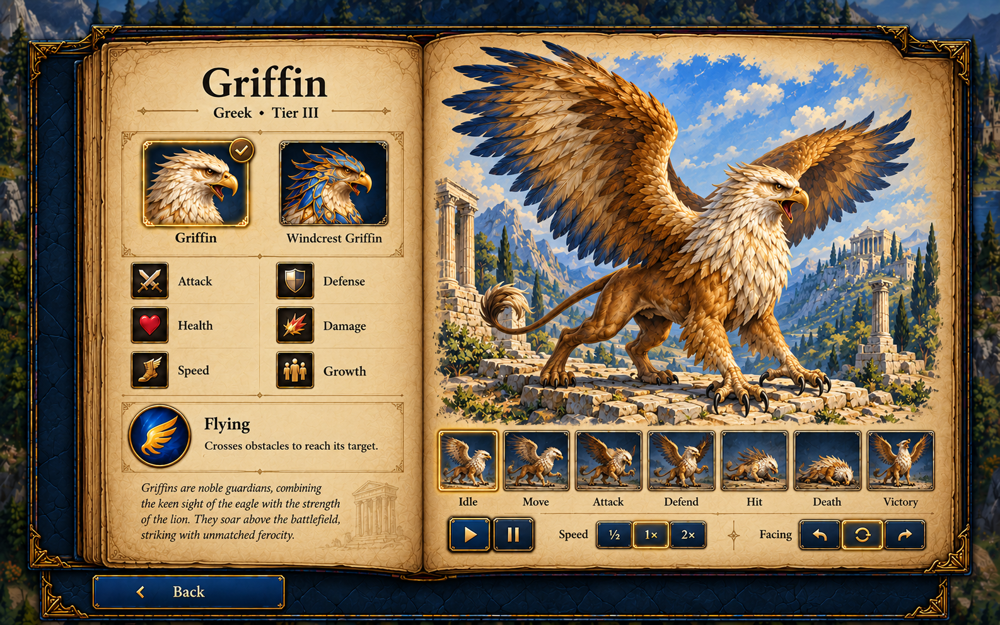
Retain existing requiredAnimations per creature including optional shoot/fly/cast/ability only when supported, current facing/rate/restart/autoplay and loading/fallback states. Each base/upgraded form resolves its actual creatureId. Reduced motion uses still; no hidden essential information on hover.
Implementation note: Replace the static generated griffin with the existing animated sprite viewer. Stats, lore, costs, growth and animation choices come from catalog/requiredAnimations. Base/upgraded forms are explicit controls. Blank numeric values in this reference are not a proposed data omission.
Current screens and asset mapping
New art: frontend.backdrop.library
Shared art: gui.surface.parchment, gui.surface.stone, gui.control.button, gui.book.open
09
Settings ledger
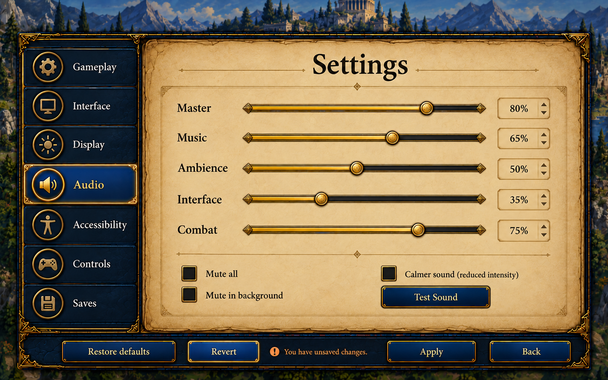
All settings stay bound to current draft. Apply persists; Revert restores; Back with edits confirms discard. Audio previews draft and restores committed prefs on exit. Keep actual graphics quality/adaptive resolution/FPS controls and platform window-mode restrictions. Seven chapters and all keyboard rebindings remain.
Implementation note: Audio is the representative page. Preserve all seven sections and every existing field, including graphics quality, adaptive resolution and FPS. Test Sound is a button, not a persisted checkbox. Live percentages and controls remain HTML.
Current screens and asset mapping
New art: frontend.backdrop.library
Shared art: gui.surface.parchment, gui.surface.stone, gui.control.button
10
Saved journeys
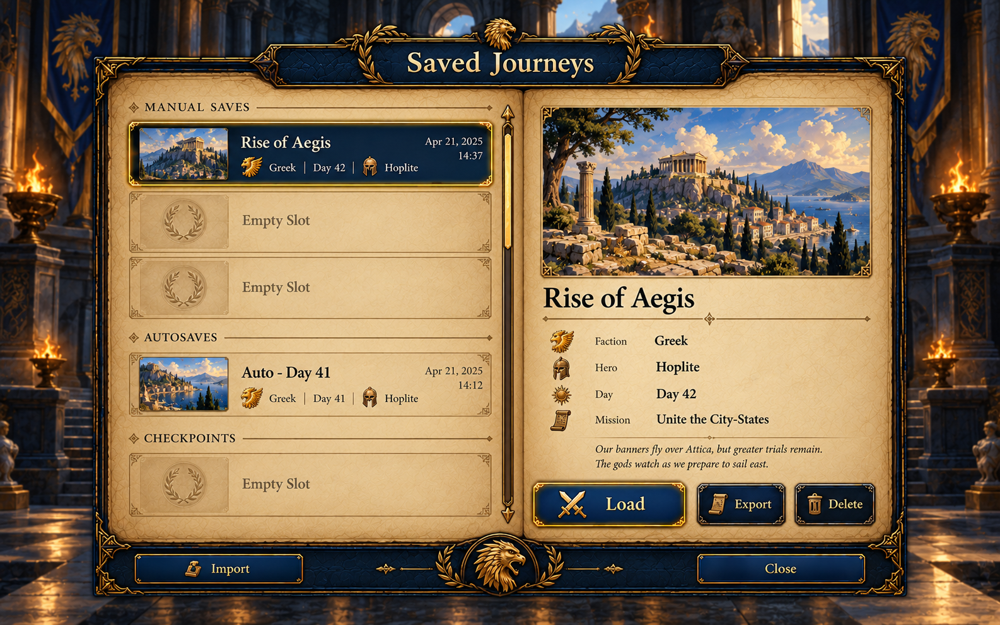
Retain actual manual/autosave/checkpoint order; Save disabled without session. MissionThumb is an illustration, not a stored screenshot. Keep compatibility reason and disabled Load, reading/unavailable/empty states, import/export/delete, overwrite/load-discard confirmations and name maxLength 60.
Implementation note: Save names, dates and hero names are sample composition only. Retain Save/Load tabs, with Save unavailable without a session, even though the painting emphasizes Load. MissionThumb is mission illustration, not a captured save screenshot. Preserve exact slot counts and compatibility states.
Current screens and asset mapping
New art: frontend.backdrop.library, frontend.empty.archive
Shared art: gui.surface.parchment, gui.surface.stone, gui.control.button
11
Local map library
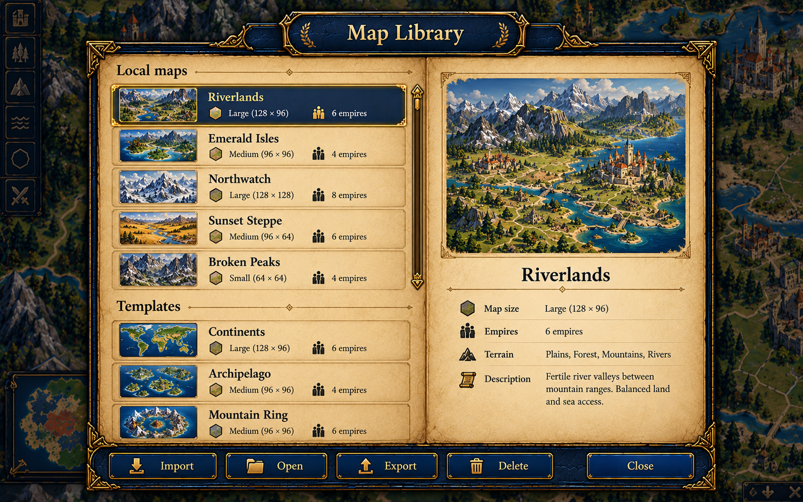
Keep local map storage, import JSON parse/validation, copy templates into editable documents, export and delete confirmation. Never imply cloud, shared maps, workshop or automatic overwrite of catalog templates. Library is existing editor overlay.
Implementation note: Names, dimensions, thumbnails and the example '8 empires' are non-authoritative mockup content; current maps support the actual schema limits (at most six). No new map preview generation is required. Use generic art unless a real suitable preview exists. Templates copy into local documents.
Current screens and asset mapping
New art: frontend.backdrop.atlas, frontend.empty.archive
Shared art: gui.surface.parchment, gui.surface.stone, gui.control.button
12
Cartographer workspace
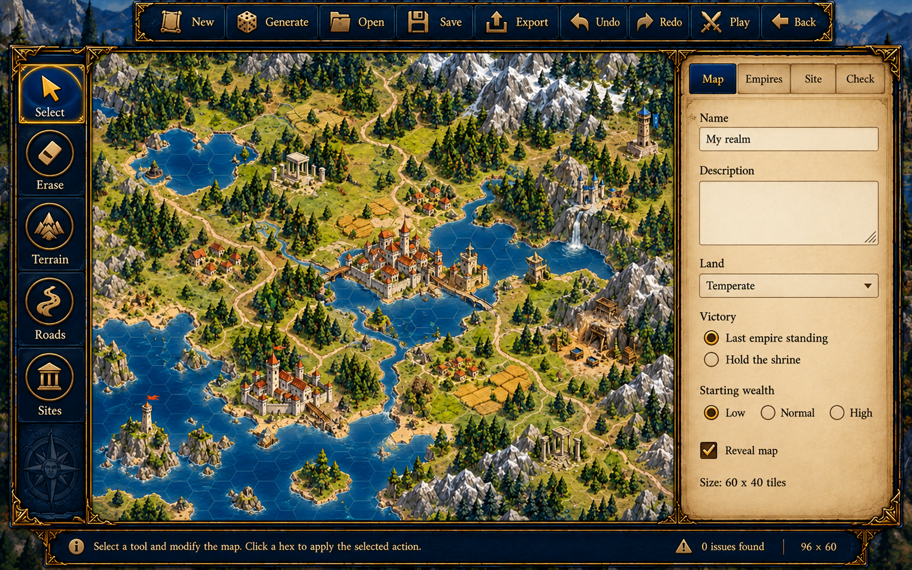
Preserve paint/select/erase/road/site tools, map/empires/site/check inspectors, validation issue navigation, new/generate/play dialogs, unsaved exit confirmation, JSON export and panning. Keep editor viewport unobstructed; no perspective rotation. All data validation remains authoritative.
Implementation note: Use actual Map/Empires/Site/Check fields and preserve every tool. The terrain painting is a layout reference; retain the real editor canvas and map document. All validation and tool behavior remain code-driven.
Current screens and asset mapping
New art: frontend.backdrop.atlas
Shared art: gui.surface.parchment, gui.surface.stone, gui.control.button
13
Hall of records
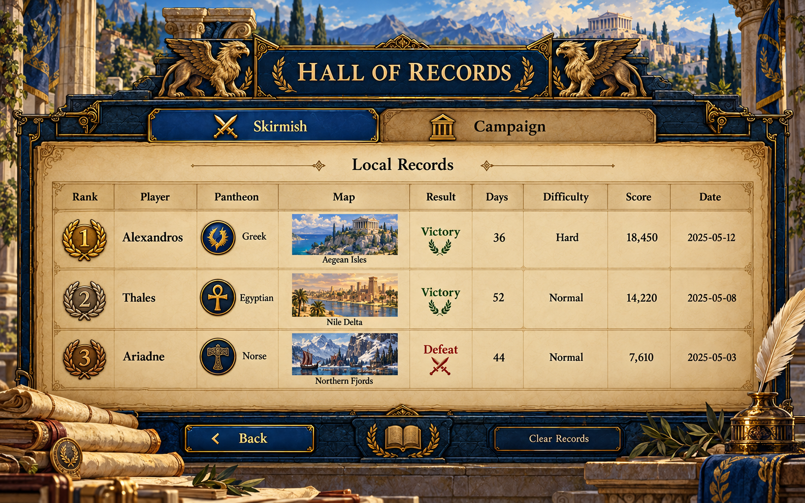
Existing local HighScoresScreen route. Preserve loading/empty state, current columns and both tables. Clear records requires current confirmation and leaves saves intact. A small title-menu Records link is an OPTIONAL proposed navigation addition, not an existing action.
Implementation note: All records, dates and scores are fictional examples. Use local platform.records and actual columns. No online leaderboard or fabricated entries. A title-menu Records link is optional new navigation to the existing screen.
Current screens and asset mapping
New art: frontend.backdrop.library, frontend.empty.archive
Shared art: gui.surface.parchment, gui.surface.stone, gui.control.button
14
Confirmations and quiet feedback
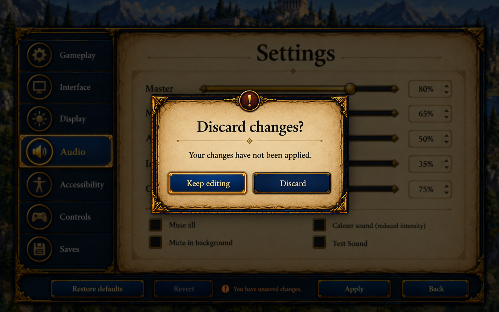
Shared confirmation, help, validation and error styling. Preserve original destructive callbacks, modal focus trapping/return focus/Escape policy and exact reasons. Keep editing is safe initial focus. Do not turn errors into decorative art or remove troubleshooting details; collapse optional technical detail only.
Implementation note: Use this hierarchy for existing confirmations. Discard confirmation belongs over Settings or another real dirty editor, never over a read-only encyclopedia. Safe initial focus is Keep editing. No painted button is an interactive control.
Current screens and asset mapping
New art: frontend.backdrop.library
Shared art: gui.surface.parchment, gui.surface.stone, gui.control.button
Text-free production artwork
frontend.backdrop.title-hall
1586 × 992 · opaque
frontend.backdrop.atlas
1586 × 992 · opaque
frontend.backdrop.library
1586 × 992 · opaque
frontend.mode.campaign
1448 × 1086 · opaque
frontend.mode.skirmish
1448 × 1086 · opaque
frontend.mode.random-map
1448 × 1086 · opaque
frontend.mode.map-editor
1448 × 1086 · opaque
frontend.empty.archive
1536 × 1024 · transparent
frontend.random.continental
1448 × 1086 · opaque
frontend.random.highlands
1448 × 1086 · opaque
frontend.random.lake_isle
1448 × 1086 · opaque
frontend.random.wild_forest
1448 × 1086 · opaque
frontend.random.marshlands
1448 × 1086 · opaque
frontend.random.crossroads
1448 × 1086 · opaque
frontend.random.archipelago
1448 × 1086 · opaque
frontend.random.twin_continents
1448 × 1086 · opaque
frontend.random.central_valley
1448 × 1086 · opaque
Delivery files
Generated with the built-in image generator. Native PNGs preserved; prompts are in assets-source/frontend-v1.1.0/generation-queue.json. Existing game files and package versions were not changed.